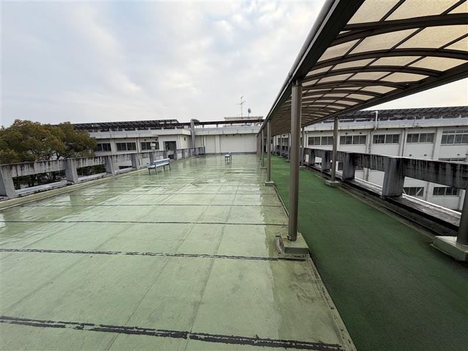
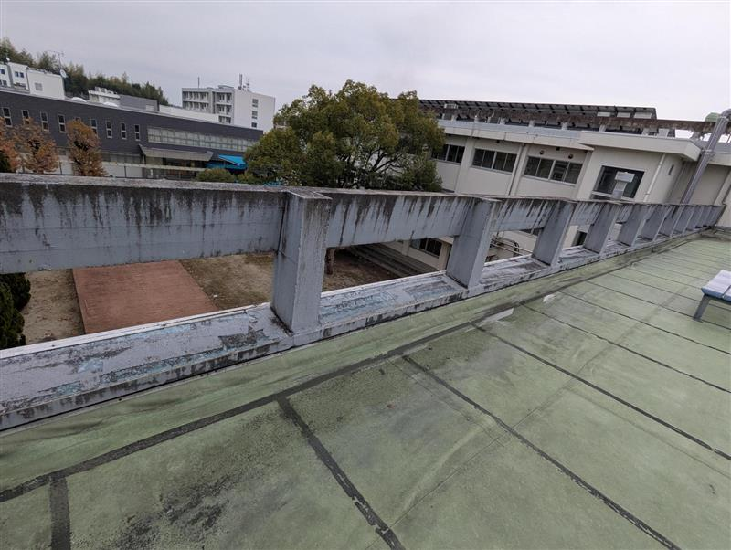

グループ5課題

図1：南館3階屋外渡り廊下（全景）

図2：コンクリート製安全柵（詳細）
1. 設備等の概要（3階・屋外渡り廊下の柵）
1.1 調査対象の範囲
本リスクアセスメントの対象は、南館3階のC棟とE棟を接続する屋外渡り廊下に設置された
コンクリート製の安全柵および、その直近の通行空間とする。
調査対象の場所： 南館3階・屋外渡り廊下調査対象： 渡り廊下両側のコンクリート製安全柵（およびその周辺環境）
1.2 設備の物理的仕様（ハードウェア）
屋外渡り廊下・柵の物理的な特徴を以下に整理する。
構造：
校舎自体は1つの建物であるが、1階・2階は屋内廊下、3階渡り廊下のみが屋外通路として独立している特殊な構造。
南館3階のC棟とE棟を接続する連絡通路として機能している。
柵（手すり）の仕様：
材質：コンクリート製の安全柵。
高さ：およそ 1.1 m。
形状：柵の下部に一定間隔で開口部 が設けられている。
表面状態：経年による塗装の劣化や汚れ、雨水による黒ずみは見られるが、著しい破損や欠損はない。
屋根・通路の構成：
雨天時の通行を考慮した屋根が設けられており、金属支柱および半透明パネルにより構成されている。
屋根下の通路には水を吸収するマットが敷かれており、それ以外の部分には水をはじく素材が使用されている。
通行路は渡り廊下の真ん中ではなく、柵に接する形で配置されている。
付帯設備：
柵の前には、3人程度が座れるベンチが2つ設置されている。
1.3 使用環境・周辺条件
設置場所は3階相当の高さに位置する屋外通路であり、転落時には重大災害につながる可能性がある。
屋外のため、風雨、日射、気温変化などの環境要因の影響を受ける。
登下校時や授業間の移動時間帯には多数の生徒が集中して利用する。
2. 意図する使用および誤使用の整理
2.1 意図する使用
本設備（渡り廊下および柵）の本来の目的・適正な使用方法は次のとおりである。
安全な歩行移動：
校舎間を移動するために、通路部を適切な速度で歩行すること。
雨天時の保護された通行：
設置された屋根・マットにより、雨天時でも滑りにくい環境を確保しつつ通行すること。
一時的な待機・滞在：
柵に持たれて休憩したり、ベンチで座って会話したりすること（ただし、柵に過度に寄りかかることは想定されていない）。
2.2 合理的に予見可能な誤使用
利用者（生徒）の行動特性や環境を踏まえると、完全には禁止しきれない「合理的に予見可能な誤使用」として
次のような行為が想定される。
授業間の移動時間における早歩き・小走り・駆け足 での通行。
友人同士でふざけながら歩く、押し合う・追いかける などの行動。
柵にもたれかかる、柵に座る、柵の上に荷物を置くといった不安定な姿勢 での利用。
ベンチや柵付近での立ち話による滞留 ・人だまり。
雨天時にマットが濡れている状態での急いだ歩行 や方向転換。
2.3 合理的に予見不可能な誤使用
一般的な生徒の行動範囲や学校での指導内容を踏まえると、通常は想定しない、
「合理的には予見困難」と考えられる誤使用の例を以下に示す。
柵や屋根の支柱によじ登り、意図的に柵を乗り越える・高さ競争をする といった危険行為。
柵の開口部やベンチの背もたれを利用してアクロバット的な運動（懸垂・逆上がりなど） を行う。
スケートボードやキックボード等を持ち込み、渡り廊下を遊具的に使用する こと。
柵の外側に物を投げる、ぶら下がるなど、明らかに危険と認識できる故意の行為 。
※リスクアセスメントでは、まず「意図する使用」「合理的に予見可能な誤使用」「合理的に予見不可能な誤使用」
を区別したうえで、主として前二者を対象にリスクを見積もり、必要な対策を検討する。
3.0 事前知識の整理
本ページでは、学校の渡り廊下の手すりを題材に、リスクアセスメントの一連の流れを整理する。
その前提として、ここでは「リスク見積り方法（加算法）」「危険源リスト（ISO 12100 / JIS ベース）」
「リスク評価の原則」について簡単にまとめる。
3.0.1 リスク見積り方法（加算法）の概要
本課題では、授業で示された「加算法」によりリスクレベル R を求める。
R は以下の 4 要素の合計で評価する。
R = S（傷害の程度） + F（暴露頻度） + Q（危険事象の発生確率） + P（回避可能性）
おおまかな考え方は次のとおりである。
S：傷害の程度（Severity）
万一事故が起きた場合、「どれくらいひどいケガになるか」を示す。
例：軽傷（打撲程度） < 重傷（骨折など） < 致命傷（死亡・重度後遺障害）。
授業では、例えば「致命傷＝S10、重傷＝S6」などのように数値化している。
F：暴露頻度（Frequency）
利用者がその危険な状態に「どれくらいの頻度でさらされるか」を示す。
例：滅多に通らない場所よりも、毎日何回も通る場所の方が F は大きくなる。
Q：危険事象の発生確率（Probability）
危険な状況にさらされたとき、「本当に事故につながる確率がどの程度か」を示す。
例：滑りやすい床で走るとき、「ほとんど起こらない」〜「かなり起こりそう」まで段階的に評価する。
P：回避可能性（Possibility of avoidance）
危険が発生しそうになったとき、「人が自力で回避できる余地がどの程度あるか」を示す。
例：ゆっくり倒れるなら避けやすいが、一瞬で落ちてしまうような場合は P が大きくなる。
これら 4 つの数値を足し合わせた合計 R をリスクレベル表と比較し、I〜IV などの段階で評価する。
一般に、R が大きいほど危険であり、レベル IV は「必ず改善が必要なリスク」とされる。
3.0.2 危険源リスト（ISO 12100 / JIS ベース）
ISO 12100（JIS B 9700 相当）では、リスクアセスメントの出発点として「危険源（ハザード）」を分類している。
本課題で関係が深い主なカテゴリを抜粋すると、次のようになる。
機械的危険源
高所からの転落、滑り・つまずき・転倒
挟まれ、巻き込まれ、衝突など（今回は主に転落・転倒が該当）
電気的危険源
感電、電撃、電気火災など（今回の事例ではほぼ対象外）
熱的危険源
高温・低温面との接触、火災など（本事例では直接の対象外）
環境に伴う危険源
雨、雪、氷、結露、風などによる滑りやすさや視界不良
屋外環境ならではの気象条件がリスクに影響する。
人間工学・使用上の危険源
使いにくい形状やレイアウト、不自然な姿勢を強いる設計など。
人の行動特性（急ぐ・ふざける・スマホを見ながら歩く など）もここに含めて整理すると分かりやすい。
材料・時間経過に伴う危険源
摩耗・腐食・劣化による強度低下や防滑性能の低下。
定期点検や清掃が行われない場合、リスクが徐々に高まる要因となる。
実際のリスクアセスメントでは、これらの分類を参考にしながら、
対象設備に存在し得る危険源を「漏れなく・ダブり少なく」洗い出していく。
3.0.3 リスク評価の原則（A4 級のまとめ）
リスク評価の基本的な考え方は、次の 3 点に整理できる。
許容できるリスクかどうかを判断する
見積もったリスクレベル R を基準表と照らし合わせ、レベル I〜IV のどこに該当するか確認する。
レベル IV のような高リスクは「受け入れられないリスク」とされ、何らかの対策が必須となる。
3 ステップメソッドに従って、優先順位をつけて対策する
① 本質的安全設計 → ② 防護物・保護装置 → ③ 使用上の情報・訓練・管理 の順で検討する。
単に「注意喚起の貼り紙」だけに頼るのではなく、できる限り構造的・物理的に危険を減らすことが重要である。
ALARP 原則（合理的に実行可能な限り低く）
技術的・経済的に見て「実行可能な範囲で、できるだけリスクを低減する」という考え方。
高所である以上、転落した場合の重篤度 S をゼロにすることはできないが、
その代わりに F・Q・P をできるだけ小さくする工夫を積み上げていく。
以上の原則を踏まえて、以下では渡り廊下の手すりを対象に、
危険源の同定・リスクシナリオの設定・リスク低減策の検討を行う。
3. 柵周辺のリスクアセスメント
ここでは、1章・2章で整理した設備概要および使用実態を前提として、
渡り廊下のコンクリート製柵（手すり） 周辺に絞り込んだリスクアセスメントを行う。
対象は、柵の上部・下部開口部・柵に接する通行路とし、ベンチや屋根などの付帯設備は範囲外とする。
3.1 危険源の同定
柵周辺の利用状況を踏まえると、主な危険源は次のように整理できる。
高所からの転落の危険源
柵の高さは約 1.1 m であり、万一柵を乗り越えた場合には 3 階相当からの転落となる。
柵下部には一定間隔の開口部 が存在し、小柄な児童・生徒や物品が通過し得る隙間となる可能性がある。
滑り・つまずき・転倒の危険源（柵との組み合わせ）
通行路が柵に接して配置されており、バランスを崩した際に柵へ衝突・もたれかかり やすい配置となっている。
雨天時など床面が滑りやすい状態では、走行や急な方向転換により柵方向へ転倒するリスクが高まる。
人的要因に起因する危険源
授業間の移動で生徒が集中し、早歩き・小走り・ふざけ合い などが発生しやすい。
柵にもたれる・柵に座るなど、本来想定されていない姿勢での利用が日常的に起こり得る。
※この段階では、危険な「結果」ではなく、「何が危険の原因になり得るか（危険源）」を、
高さ・開口部・通路配置・人の行動という観点から整理している。
3.2 リスクシナリオ
上記で同定した危険源にもとづき、代表的なリスクシナリオを 3 つ設定する。
いずれも、通常の通行や合理的に予見可能な誤使用の範囲で起こり得る事象とする。
シナリオ A：通行中に転倒し、柵に衝突して負傷する
授業間の移動時間に生徒が小走りで通行している。
雨天などで床面がやや滑りやすい状態となっている。
バランスを崩して柵側へ転倒し、柵の角や上端に身体（頭部・上肢など）を強く打ちつける。
結果として、骨折・打撲・裂傷などの傷害が発生する可能性がある。
シナリオ B：柵にもたれかかった状態から後方へバランスを崩し、柵を乗り越えて転落する
生徒が友人との会話中に柵にもたれかかって立っている。
ふざけて押される、体重を預け過ぎるなどして重心が外側に移動する。
柵の高さ 1.1 m を越える形で身体が乗り上げ、そのまま外側へ転落する。
3 階相当からの転落により、致命傷または重度後遺障害のリスクがある。
シナリオ C：小柄な児童が柵下部の開口部から体の一部を出し、転落しかける
低学年の児童など、小柄な利用者が柵付近で遊んでいる。
柵下部の一定間隔で設けられた開口部に足や腰を入れる、あるいは身を乗り出す行動をとる。
バランスを崩して開口部から体が外側へ大きく乗り出し、救助が間に合わない場合には転落に至る可能性がある。
3.3 リスクの見積もり
本課題では、授業で示された加算法に従い、傷害の程度（S）、暴露頻度（F）、
危険事象の発生確率（Q）の 3 要素を用いてリスク値 R を求める。
回避可能性（P）は本評価では用いず、R ＝ S + F + Q と定義する。
表 1 リスクレベルと合計点（R）
リスクレベル
合計点 R
評価の目安
IV
20～13
必ず改善する
III
12～9
コストとの兼ね合いで改善を検討
II
8～6
中程度のリスク
I
5 以下
許容可能
S・F・Q の点数は、図書および授業スライドで示された尺度に基づき表 2 のように定義する。
表 2 S・F・Q の評価基準
項目
区分
点数
説明
傷害の程度
致命傷
10
死亡や永久的労働不能に繋がるけが
重傷
6
長期療養を要するけが、障害の残るけが
軽傷
3
休業災害・不休災害（いずれも完治可能なけが）
微傷
1
手当後すぐに元の作業に戻れる程度のけが
暴露頻度
頻繁
4
数回／日
時々
3
1回／日
たまにある
2
数回／週
ほとんどない
1
数回／月
危険事象の
確実
6
危険事象がほぼ必ず発生する
可能性が高い
4
条件がそろえば高い頻度で発生し得る
可能性がある
2
一定の条件が重なると発生し得る
ほとんどない
1
通常の条件ではほぼ発生しない
この基準を用いて、3.2 で設定したシナリオ A～C のリスク値を次のように見積もった。
表 3 各リスクシナリオの点数とリスクレベル（R＝S+F+Q）
シナリオ
想定される主な傷害
S
F
Q
R＝S+F+Q
リスクレベル
A：通行中に転倒して柵に衝突
頭部打撲・骨折・裂傷など重傷クラスの負傷
6（重傷）
2（たまにある：数回／週）
2（可能性がある）
10 III：コストとの兼ね合いで改善を検討
B：柵にもたれた状態から乗り越えて転落
致命傷または永久的障害
10（致命傷）
1（ほとんどない：1回／月）
2（可能性がある）
13 IV：必ず改善する
C：小柄な児童が開口部から体を乗り出す
転落時には致命傷となる可能性
10（致命傷）
1（たまにある：対象者が限定される）
2（可能性がある）
13 IV：必ず改善する
※暴露頻度 F については、授業スライドに示された「頻繁＝数回／日」「時々＝1回／日」
「たまにある＝数回／週」「ほとんどない＝数回／月」を基準に、渡り廊下の実際の利用状況を踏まえて判定した。
その結果、転落に至るシナリオ B・C はいずれもレベル IV（R≧13）となり、柵構造の改善が必須であると判断される。
シナリオ A はレベル III であり、優先度はやや下がるものの、コストとの兼ね合いを考慮しつつ改善を検討すべきリスクである。
3.4 3ステップメソッドによるリスク低減
上記の評価結果より、とくにシナリオ B・C は致命傷につながるレベル IV のリスクであり、
柵の構造そのものに踏み込んだ対策が必要である。3 ステップメソッド
（①本質的安全設計方策 → ②安全防護・付加保護方策 → ③使用上の情報）に沿って、
柵周辺に対するリスク低減方策を検討する。
3.4 3ステップメソッドによるリスク低減
上記のとおり、シナリオ A～C はいずれもリスクレベル IV に分類される。
とくに B・C は致命傷の可能性を含む高リスクであり、
3 ステップメソッド（①本質的安全設計方策 → ②安全防護・付加保護方策 → ③使用上の情報）に沿って、
柵周辺の構造および運用の両面からリスク低減を図る必要がある。
3.4 3ステップメソッドによるリスク低減
上記のうち、とくに高所からの転落につながり得るシナリオ B・C は、
傷害の程度が極めて大きく、現状のままでは許容しがたいリスクとなる可能性がある。
3 ステップメソッド（①本質的安全設計方策 → ②安全防護・付加保護方策 → ③使用上の情報）に沿って、
柵周辺に対する具体的な低減方策を検討する。
① 本質的安全設計方策
柵の高さの見直し により、もたれかかった状態からの乗り越えを困難にする。
柵下部の開口部寸法を縮小 し、小柄な利用者であっても体の一部が大きく外側に出ないようにする。
柵上端の形状を、腰掛けやすい・座りやすい形から、座りにくい形状 （丸める、傾斜をつける等）へ変更する。
② 安全防護および付加保護方策
開口部に補助格子・パネル を追加し、足を掛ける・体を乗り出す動作を物理的に防止する。
柵の内側に二次的な手すり・ガードバー を追加し、転倒時に身体が直接外側へ向かわないようにする。
柵近傍の床面において、防滑性の高い仕上げや点字ブロックとの段差解消などを行い、転倒そのものの発生確率を低減する。
③ 使用上の情報（警告・ルール・教育）
柵にもたれかからない、座らない、開口部で遊ばない等を示すピクトグラム付き注意表示 を柵付近に設置する。
始業式・学年集会等の場で、渡り廊下の危険性と具体的な禁止行為について生徒へ繰り返し周知 する。
教職員による見回り・声かけを強化し、危険な行動が習慣化しないようにする。
3.5 リスク低減後の柵周辺のイメージ
上記の 3 ステップメソッドに基づく低減方策を適切な範囲で導入した場合、柵周辺の設備概要は概ね次のような状態となる。
柵の高さおよび開口部寸法が見直され、通常の利用状態からは容易に乗り越え・すり抜けが発生しない構造 となっている。
転倒時には、二次的なガードバー等により、利用者が直接外側へ向かって転落しにくいレイアウト になっている。
柵付近の床面は防滑性が確保され、転倒そのものの発生頻度が抑制されている。
注意表示と指導が継続的に行われることで、柵にもたれる・座る・開口部で遊ぶといった合理的に予見可能な誤使用が減少 している。
※残留リスクが許容範囲内に収まっているかどうかは、対策実施後に再度 S・F・Q・P を見積もり、
R を再計算することで確認する。